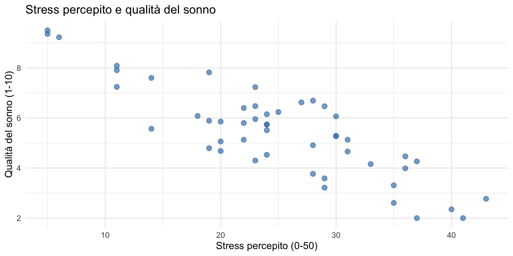
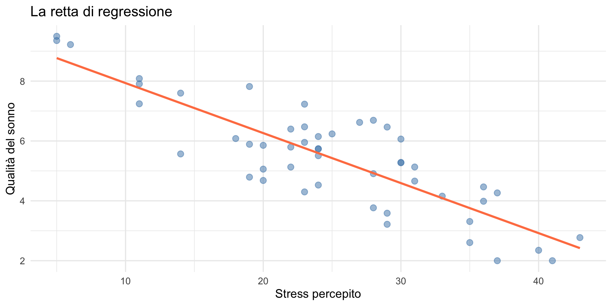
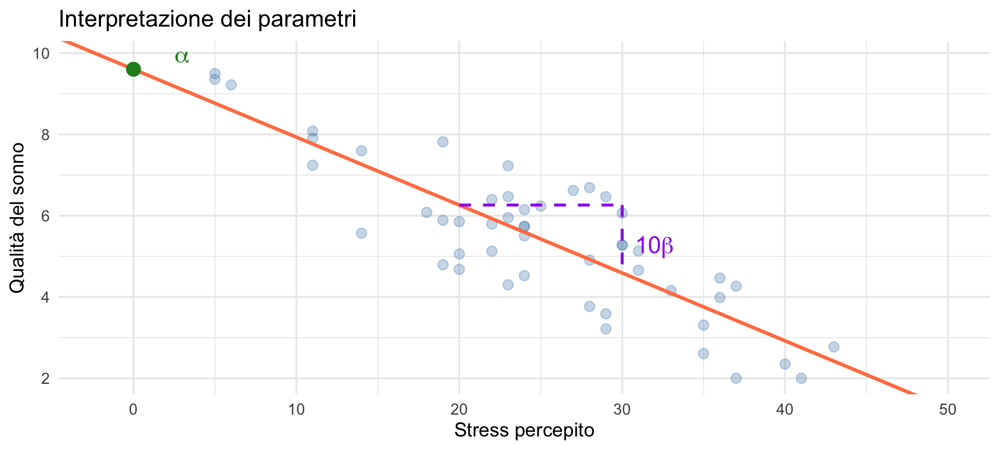
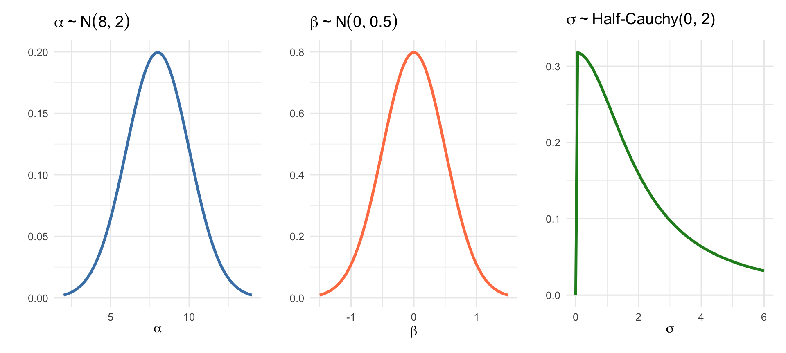

![]()
# Simuliamo dati realistici
n <- 50
stress <- round(rnorm(n, mean = 25, sd = 8)) # Scala 0-50
stress <- pmax(5, pmin(stress, 45)) # Limitiamo il range
# Relazione lineare + rumore
sonno <- 9 - 0.15 * stress + rnorm(n, 0, 1.2)
sonno <- pmax(2, pmin(sonno, 10)) # Scala 1-10
dati <- data.frame(stress = stress, sonno = sonno)Il modello di regressione lineare bayesiano
Concetti fondamentali — Segmento 1
29 ottobre 2026
Dalle distribuzioni ai modelli
Nelle Lezioni 22 e 23 abbiamo imparato a usare le distribuzioni predittive per verificare e prevedere. Ora facciamo il passo decisivo: usiamo il framework bayesiano per modellare la relazione tra variabili.
Il modello di regressione lineare è lo strumento più usato in psicologia per questo scopo — e la prospettiva bayesiana ci permette di interpretarlo in modo più ricco.
Obiettivi
- Comprendere la logica del modello di regressione lineare.
- Formulare il modello in termini bayesiani.
- Specificare prior sui parametri.
- Interpretare i coefficienti di regressione.
Parte 1: la domanda della ricerca
Un esempio motivante
Immaginiamo di voler studiare la relazione tra stress percepito e qualità del sonno in un campione di studenti universitari.
Domanda: come varia, in media, la qualità del sonno al variare del livello di stress?
Il modello di regressione lineare ci permette di rispondere a questa domanda.
I dati
Sintassi R
equivale a “Prendi ogni valore di sonno e assicurati che sia compreso tra 2 e 10 (inclusi)”.
Più precisamente:
- se
sonno < 2→ diventa2; - se
sonno > 10→ diventa10; - se
2 ≤ sonno ≤ 10→ resta invariato.
Lo stesso risultato si potrebbe ottenere con:
Visualizziamo

Cosa osserviamo?
Dal grafico emerge una tendenza: studenti con maggiore stress tendono a riportare una qualità del sonno inferiore.
Ma questa tendenza è solo approssimativa:
- non tutti i punti cadono su una retta;
- c’è variabilità attorno alla tendenza centrale.
Il modello di regressione quantifica questa relazione.
Parte 2: il modello di regressione
L’idea fondamentale
Il modello di regressione lineare assume che:
\[ y_i = \alpha + \beta x_i + \varepsilon_i, \]
dove:
- \(y_i\) è la variabile dipendente (qualità del sonno),
- \(x_i\) è la variabile indipendente (stress),
- \(\alpha\) è l’intercetta,
- \(\beta\) è la pendenza (coefficiente angolare),
- \(\varepsilon_i\) è l’errore (residuo).
Interpretazione geometrica

La retta rappresenta la relazione media tra le due variabili.
Cosa significano i parametri?
Intercetta (\(\alpha\)):
Il valore atteso di \(y\) quando \(x = 0\).
- Nel nostro esempio: la qualità del sonno media quando lo stress è zero.
Pendenza (\(\beta\)):
La variazione attesa di \(y\) quando \(x\) aumenta di un’unità.
- Nel nostro esempio: di quanto cambia (in media) la qualità del sonno per ogni punto in più di stress.
Visualizziamo l’interpretazione

Il ruolo dell’errore
I punti non cadono tutti sulla retta perché:
- ci sono altri fattori che influenzano il sonno (non misurati);
- c’è variabilità naturale tra individui;
- la misura contiene errore.
Questa variabilità è catturata dal termine di errore \(\varepsilon_i\).
L’assunzione sulla distribuzione dell’errore (regressione classica)
Nel modello di regressione lineare classico assumiamo che l’errore sia distribuito normalmente:
\[ \varepsilon_i \sim \mathcal{N}(0, \sigma). \]
Questa assunzione implica che, dato un valore di \(x_i\), la variabile risposta \(y_i\) segua una distribuzione Normale:
\[ y_i \sim \mathcal{N}(\alpha + \beta x_i, \sigma). \]
Interpretazione geometrica
- La retta \(\alpha + \beta x\) rappresenta il valore medio atteso di \(y\) per ogni valore di \(x\);
- i dati osservati si distribuiscono simmetricamente attorno alla retta;
- \(\sigma\) misura quanto i punti sono dispersi verticalmente rispetto alla retta.
Parte 3: dalla regressione classica a quella bayesiana
Cosa è casuale nel modello frequentista?
Punto cruciale:
nel modello frequentista non tutto è casuale.
- i dati \(y_i\) sono casuali;
- gli errori \(\varepsilon_i\) sono casuali;
- i parametri \(\alpha\), \(\beta\), \(\sigma\) sono fissi ma sconosciuti.
Ricordate la Lezione 14: nel paradigma frequentista l’incertezza riguarda il processo di campionamento, non i parametri stessi.
Regressione frequentista: cosa significa “stimare”?
Nell’approccio classico:
- esiste un vero valore di \(\alpha\), \(\beta\), \(\sigma\);
- noi non lo conosciamo;
- usiamo i dati per ottenere stime puntuali: \[ \hat{\alpha}, \hat{\beta}, \hat{\sigma}. \]
Il metodo più comune è quello dei minimi quadrati.
L’incertezza nel mondo frequentista
Nel frequentismo l’incertezza riguarda il processo di campionamento, non i parametri.
Un intervallo di confidenza al 95% non significa:
“c’è il 95% di probabilità che \(\beta\) sia contenuto nell’intervallo”
significa invece:
“se ripetessimo il campionamento infinite volte, il 95% degli intervalli così costruiti conterrebbe il vero \(\beta\)”.
Questa è l’interpretazione che abbiamo discusso nelle Lezioni 14–16 e che ha contribuito alla crisi di riproducibilità.
Passiamo all’approccio bayesiano
Nell’approccio bayesiano cambiamo prospettiva:
non trattiamo più i parametri come quantità fisse ma ignote, bensì come variabili casuali.
Cosa è casuale nel modello bayesiano?
Nel modello bayesiano sono trattati come variabili casuali:
- i dati osservati \(y_i\);
- gli errori \(\varepsilon_i\);
- i parametri del modello \(\alpha\), \(\beta\), \(\sigma\).
Questa “casualità” non descrive il funzionamento fisico del mondo, ma la nostra incertezza conoscitiva sui valori dei parametri.
Si tratta quindi di una casualità epistemica, non ontologica.
Cosa significa “casualità epistemica”?
Dire che un parametro è casuale non significa che esso cambi realmente da un esperimento all’altro.
Significa invece che:
noi non conosciamo il suo valore esatto e rappresentiamo questa incertezza tramite una distribuzione di probabilità.
Le distribuzioni a priori e a posteriori formalizzano ciò che sappiamo (e non sappiamo) sui parametri.
Modelli bayesiani come modelli di conoscenza
I modelli bayesiani non sono modelli diretti del mondo “così com’è”, ma modelli di ciò che possiamo razionalmente conoscere del mondo considerando:
- i dati osservati;
- le assunzioni del modello;
- le informazioni pregresse disponibili.
Il progetto frequentista
Storicamente, il frequentismo si è sviluppato con l’obiettivo di garantire una forma di oggettività assoluta:
- eliminare ogni riferimento a stati di conoscenza soggettivi;
- fondare l’inferenza esclusivamente su frequenze di lungo periodo;
- separare nettamente “dati” e “credenze”.
Come discusso in https://ccaudek.github.io/utet-companion/ questa posizione è legata anche a precise scelte storiche e ideologiche, tra cui l’idea di un’oggettività statistica necessaria per giustificare il progetto eugenetico.
L’approccio bayesiano: un modello epistemico
L’approccio bayesiano adotta una prospettiva diversa:
- accetta che ogni inferenza parta da informazioni incomplete;
- riconosce che le assunzioni non possono essere eliminate, ma solo esplicitate;
- fornisce un quadro normativo per aggiornare razionalmente le credenze alla luce dei dati.
In questo senso, il bayesianesimo è un modello epistemico:
- non promette neutralità assoluta, ma coerenza interna e ottimalità inferenziale.
Specificare il modello bayesiano
Un modello di regressione bayesiana si compone di tre elementi:
1. Modello dei dati (likelihood)
\[ y_i \sim \mathcal{N}(\alpha + \beta x_i, \sigma). \]
(uguale al modello classico)
2. Distribuzioni a priori
Assegniamo una distribuzione di probabilità ai parametri:
\[ \alpha \sim p(\alpha), \quad \beta \sim p(\beta), \quad \sigma \sim p(\sigma). \]
Queste distribuzioni rappresentano ciò che sappiamo (o non sappiamo) prima di osservare i dati. Questo è il passo che abbiamo imparato a calibrare nella Lezione 22 con il prior predictive check.
3. Posterior: combinare dati e priori
Usando il teorema di Bayes otteniamo:
\[ p(\alpha, \beta, \sigma \mid y) \propto p(y \mid \alpha, \beta, \sigma)\, p(\alpha, \beta, \sigma). \]
La posterior è il cuore dell’inferenza bayesiana — come abbiamo visto sin dalla Lezione 17.
Interpretazione dei parametri: frequentista vs bayesiano
Frequentista
- \(\hat{\beta}\) è una stima puntuale;
- l’intervallo di confidenza è una procedura di lungo periodo;
- non possiamo dire: “\(\beta\) ha probabilità 0.95 di essere incluso in questo intervallo”.
Bayesiano
\(\beta\) ha una distribuzione a posteriori;
un intervallo credibile al 95% significa:
“dato il modello e i dati, la probabilità che \(\beta\) cada in questo intervallo è 95%”.
Questa interpretazione è diretta e intuitiva — è la stessa che abbiamo usato nella Lezione 20 per sintetizzare le distribuzioni a posteriori.
Predizione: differenza fondamentale
Frequentista
- Si usano stime puntuali dei parametri;
- l’incertezza è spesso trattata separatamente;
- la previsione è spesso meno naturale.
Bayesiano
La predizione integra automaticamente:
- incertezza sui parametri;
- variabilità dei dati;
la distribuzione predittiva a posteriori (Lezione 23) risponde direttamente a domande del tipo:
“quali valori di \(y\) sono plausibili per un nuovo individuo?”
Riassunto concettuale
| Aspetto | Frequentista | Bayesiano |
|---|---|---|
| Parametri | Fissi ma ignoti | Variabili casuali |
| Incertezza | Sul campionamento | Sui parametri |
| Intervalli | Di confidenza | Credibili |
| Interpretazione | Indiretta | Diretta |
| Predizione | Procedurale | Probabilistica |
Messaggio chiave
Il modello bayesiano non cambia la forma della regressione, cambia il significato dell’incertezza e il modo in cui interpretiamo i parametri.
Parte 4: scegliere le prior
Il modello bayesiano completo
Consideriamo le distribuzioni a priori:
\[ \alpha \sim \text{Normale}(\mu_\alpha, \sigma_\alpha) \] \[ \beta \sim \text{Normale}(\mu_\beta, \sigma_\beta) \] \[ \sigma \sim \text{Half-Cauchy}(0, s) \]
Il significato delle prior
Le distribuzioni a priori esprimono le nostre credenze prima di vedere i dati.
Prior debolmente informative:
- centrate su valori neutri (spesso zero);
- sufficientemente ampie da non escludere valori plausibili;
- scopo: regolarizzare le stime, non imporre credenze.
Esempio: scegliere le prior
Per il nostro esempio (stress → sonno), ragioniamo:
per \(\alpha\) (intercetta):
- con stress = 0, la qualità del sonno dovrebbe essere alta.
- prior: \(\alpha \sim \text{Normale}(8, 2)\).
per \(\beta\) (pendenza):
- ci aspettiamo un effetto negativo ma moderato.
- prior: \(\beta \sim \text{Normale}(0, 0.5)\).
per \(\sigma\) (errore):
- la variabilità residua dovrebbe essere di 1-2 punti.
- prior: \(\sigma \sim \text{Half-Cauchy}(0, 2)\).
Visualizziamo le prior

Come si ottiene la posterior?
Applicando il teorema di Bayes:
\[ p(\alpha, \beta, \sigma \mid y) \propto p(y \mid \alpha, \beta, \sigma) \cdot p(\alpha) \cdot p(\beta) \cdot p(\sigma). \]
In pratica:
- la posterior non ha forma analitica;
- usiamo metodi MCMC (campionamento) per approssimarla;
- software come
brmsgestisce tutto automaticamente.
Parte 5: interpretazione dei risultati bayesiani
Cosa otteniamo dall’analisi bayesiana?
A differenza dell’approccio classico, otteniamo:
- distribuzioni a posteriori per ogni parametro;
- intervalli di credibilità con interpretazione diretta;
- probabilità per qualsiasi ipotesi sui parametri.
La differenza fondamentale
Approccio classico:
“Se ripetessimo lo studio infinite volte, il 95% degli intervalli di confidenza conterrebbe il vero valore del parametro.”
Approccio bayesiano:
“C’è il 95% di probabilità che il parametro si trovi in questo intervallo, dati i nostri dati e le nostre prior.”
Interpretare la pendenza
Approccio classico: \(\hat{\beta}\) = -0.167 (SE = 0.015).
Interpretazione: “La stima puntuale della pendenza è -0.167, con errore standard 0.015.”
Approccio bayesiano: distribuzione a posteriori di \(\beta\).
Interpretazione: “La distribuzione completa della pendenza ci permette di quantificare direttamente la probabilità di qualsiasi affermazione su \(\beta\).”
Differenza fondamentale:
l’incertezza non è sintetizzata in un solo numero (SE), ma è visibile e interpretabile direttamente nella distribuzione di probabilità.
Rispondere a domande specifiche
Con la posterior, possiamo calcolare:
- \(P(\beta < 0)\) = probabilità che l’effetto sia negativo.
- \(P(\beta < -0.1)\) = probabilità che l’effetto sia “rilevante”.
- \(P(-0.15 < \beta < -0.05)\) = probabilità in un intervallo specifico.
Queste sono probabilità dirette, non valori-\(p\).
Parte 6: trasformazione delle variabili
Il problema dell’intercetta
Nel nostro esempio, \(\alpha\) rappresenta la qualità del sonno quando lo stress = 0.
Ma:
- lo stress = 0 potrebbe non essere nel range dei dati;
- l’intercetta potrebbe non avere significato pratico.
Soluzione: centrare la variabile indipendente.
Centrare i predittori
Definiamo una nuova variabile:
\[ x_c = x - \bar{x}. \]
Ora \(x_c = 0\) corrisponde al valore medio di stress.
L’intercetta \(\alpha\) diventa:
“la qualità del sonno media quando lo stress è al livello medio del campione.”
Esempio pratico
Standardizzare le variabili
Per rendere i coefficienti più interpretabili, possiamo anche standardizzare:
\[ z_x = \frac{x - \bar{x}}{s_x}, \quad z_y = \frac{y - \bar{y}}{s_y}. \]
In questo caso:
- l’intercetta è sempre 0.
- il coefficiente \(\beta\) indica di quante deviazioni standard cambia \(y\) (in media) quando \(x\) aumenta di una deviazione standard.
Coefficiente standardizzato
Il coefficiente standardizzato è equivalente alla correlazione tra le due variabili:
Riepilogo
I punti chiave
La regressione lineare modella la relazione media tra variabili.
Nella formulazione bayesiana, i parametri sono variabili casuali.
Le prior esprimono credenze iniziali e regolarizzano le stime.
La posterior quantifica l’incertezza dopo aver visto i dati.
Centrare i predittori migliora l’interpretabilità.
Il modello in sintesi
\[ \begin{aligned} y_i &\sim \text{Normale}(\mu_i, \sigma) \\ \mu_i &= \alpha + \beta x_i \\ \alpha &\sim \text{Normale}(\cdot, \cdot) \\ \beta &\sim \text{Normale}(\cdot, \cdot) \\ \sigma &\sim \text{Half-Cauchy}(\cdot) \end{aligned} \]
Per il prossimo segmento
Prossimo segmento:
Implementazione pratica con brms: stima del modello, diagnostica, interpretazione dei risultati e posterior predictive check.